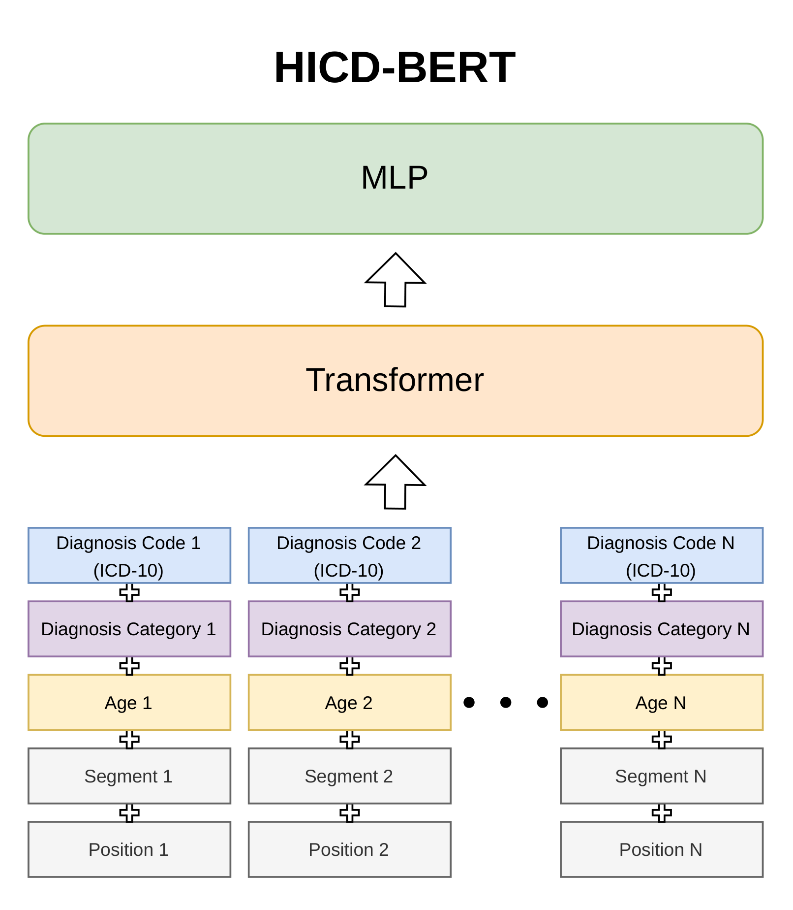
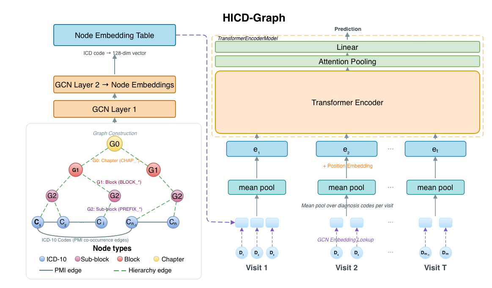
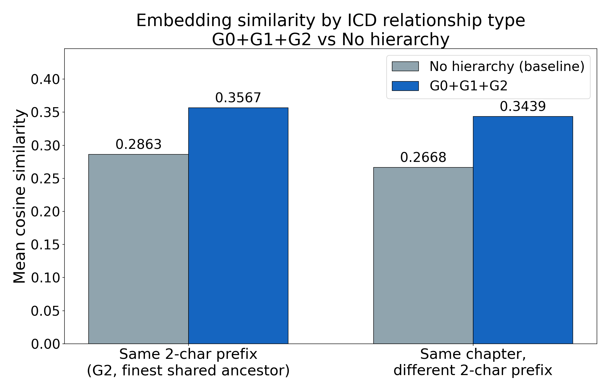
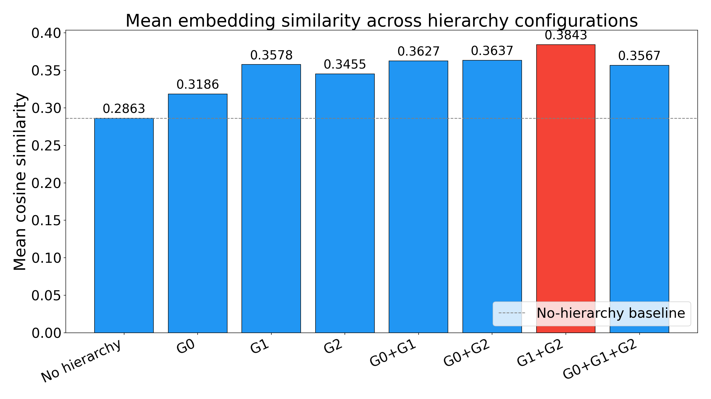

Abstract
Electronic health record foundation models typically treat ICD diagnosis codes as flat tokens, overlooking the clinically meaningful hierarchical structure that captures disease families, subcategories, and fine-grained diagnostic detail. In this work, we study ICD-10-CM hierarchy as a general inductive bias for clinical representation learning. We investigate two complementary mechanisms for incorporating hierarchy: first, by augmenting diagnosis sequences in a BERT-style transformer with tokens corresponding to different levels of the ICD hierarchy, and second, by injecting hierarchy into graph-based code representations through hierarchy-aware edges combined with diagnosis co-occurrence structure. We conduct experiments on two large-scale real-world clinical datasets: MIMIC-IV, used for pretraining and in-domain evaluation, and eICU, used to assess cross-dataset transfer via frozen-encoder probing. Our findings show that explicitly encoding ICD hierarchy improves over flat code representations in both in-domain and cross-dataset settings, while revealing that the most useful level of hierarchy depends on both the task and the modeling approach.
Contributions
- ICD hierarchy as an inductive bias for EHR foundation models. We evaluate two complementary paradigms (token-level injection in HICD-BERT and graph-level encoding in HICD-Graph) with a systematic ablation over three hierarchy levels, showing that hierarchy significantly improves performance in 26 of 28 comparisons.
- Cross-dataset transfer. Under a frozen-encoder probe from MIMIC-IV to eICU, graph-based hierarchy encoding transfers robustly to a new dataset, while token-level hierarchy is more tied to the source distribution.
- Embedding analysis. Hierarchy produces tighter, clinically coherent code clusters, and configurations with the tightest clusters also achieve the strongest downstream performance.
Method
ICD-10 hierarchy levels (G0, G1, G2)
Each ICD-10-CM diagnosis code belongs to a chapter (G0), an officially defined block of related categories (G1), and a three-character category (G2). We treat (G0, G1, G2) ∈ {0,1}3 as eight ablation settings, where (0,0,0) is the no-hierarchy baseline.


HICD-BERT — token-level injection
Extends BEHRT. Each diagnosis token's input embedding is the sum of code, age, position, and segment embeddings plus up to three additive hierarchy embeddings, one per enabled level (1-/2-/3-character string prefix). The hierarchy-aware embedding layer is the only change to the BEHRT backbone, and the model is pretrained with masked language modeling and fine-tuned per task.
HICD-Graph — graph-level encoding
Constructs a diagnosis graph with PMI-weighted co-occurrence edges, augmented with uniform-weight hierarchy edges from each ICD code to its enabled ancestor nodes (ICD-10 chapter, official block, 2-character prefix). A two-layer GCN trained with a link-prediction objective learns hierarchy-aware code embeddings, which initialise a patient-level transformer (masked mean pooling per visit, attention pooling across visits).
Tasks & datasets
- 30-day readmission (MIMIC-IV) — does the patient return within 30 days of discharge?
- Emergency-admission prediction (MIMIC-IV) — is the next admission emergency-class?
- ICU readmission (eICU) — frozen-encoder transfer probe from MIMIC-IV.
Results
In-domain — 30-day readmission
| Group | Hierarchy | HICD-BERT F1-macro | HICD-BERT AUROC | HICD-Graph F1-macro | HICD-Graph AUROC |
|---|---|---|---|---|---|
| Baseline | No hierarchy | 0.5786 | 0.6808 | 0.5976 | 0.6992 |
| Single-level | G0 | 0.5825 | 0.6858* | 0.6025* | 0.7086* |
| G1 | 0.5740* | 0.6811 | 0.6006* | 0.7079* | |
| G2 | 0.5896* | 0.6921* | 0.6005* | 0.7086* | |
| Two-level | G0+G1 | 0.5696* | 0.6863* | 0.6088* | 0.7105* |
| G0+G2 | 0.5953* | 0.6918* | 0.5999 | 0.7097* | |
| G1+G2 | 0.5834* | 0.6917* | 0.6000 | 0.7113* | |
| All-levels | G0+G1+G2 | 0.5731* | 0.6923* | 0.5991 | 0.7114* |
* p < 0.05 from pairwise DeLong tests on AUROC and paired bootstrap tests on F1-macro, both against the no-hierarchy baseline. Full tables for emergency-admission prediction and cross-dataset transfer to eICU appear in the paper.
Embedding analysis


All hierarchy-aware variants pull related ICD codes closer in embedding space, and the configurations with the tightest local clusters (G1+G2) also achieve the strongest downstream AUROC, linking representation geometry to predictive accuracy.
BibTeX
@article{thukral2026hicd,
title = {Hierarchical Modeling of ICD Codes in EHR Foundation Models},
author = {Thukral, Megha and Kang, Dong Gyun and Singh, Rudra Pratap
and Hiremath, Shruthi Kashinath and H{\"a}nsel, Katrin and Pl{\"o}tz, Thomas},
journal = {Preprint, Under Review},
year = {2026}
}